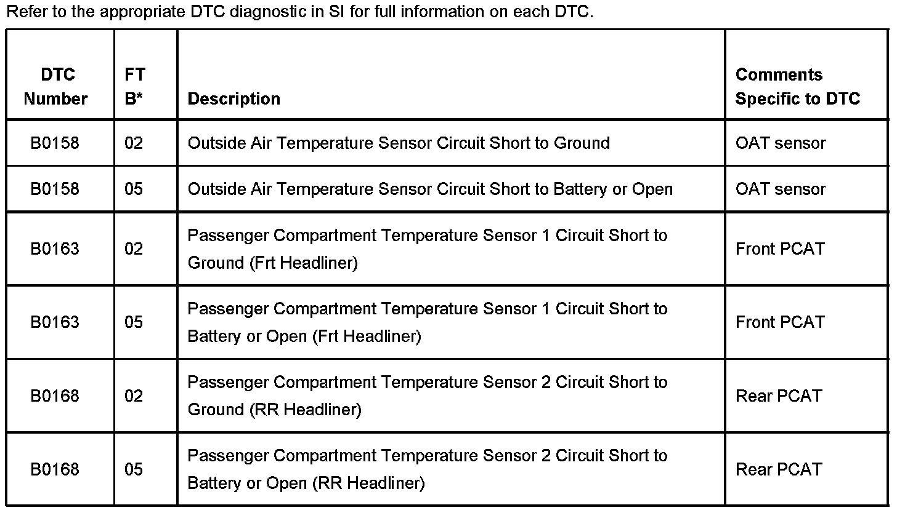
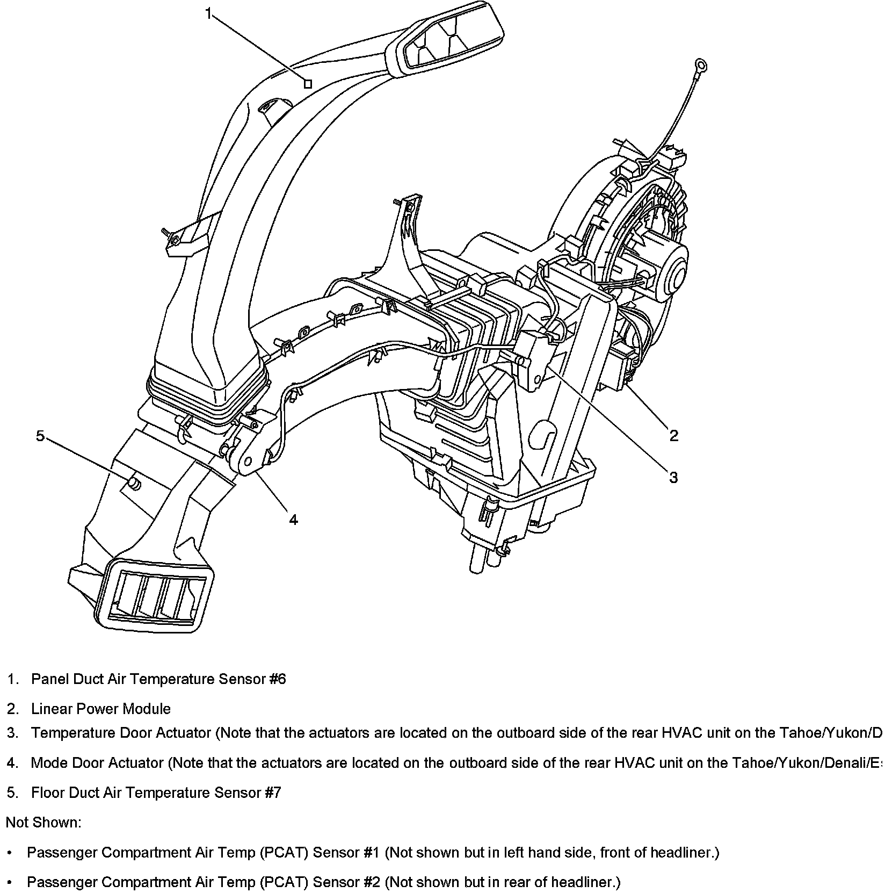

<!DOCTYPE html>
<html>
  <head>
    <title>A/C - DTC Reference/Sensor/Actuator Locations — 2007 Cadillac Escalade ESV AWD V8-6.2L Service Manual | Operation CHARM</title>
    <meta name='description' content="Detailed repair manual for the 2007 Cadillac Escalade ESV AWD V8-6.2L.">
    <link rel='stylesheet' href="../../../../../../style.css">
    <meta name='viewport' content='width=device-width, initial-scale=1.0' />
  </head>
  <body>
    <div class='theme-colors header'>
      <div class='branding'><b>Operation CHARM</b>: Car repair manuals for everyone.</div>
<div class=breadcrumbs><a class='breadcrumb-part' href="../../../../../../">Home</a> <b>&gt;&gt;</b> <a class='breadcrumb-part' href="../../../../../../Cadillac/">Cadillac</a> <b>&gt;&gt;</b> <a class='breadcrumb-part' href="../../../../../../Cadillac/2007/">2007</a> <b>&gt;&gt;</b> <a class='breadcrumb-part' href="../../../../../../index.html">Escalade ESV AWD V8-6.2L</a> <b>&gt;&gt;</b> <a class='breadcrumb-part' href="../../../../../../Repair%2520and%2520Diagnosis/index.html">Repair and Diagnosis</a> <b>&gt;&gt;</b> <a class='breadcrumb-part' href="../../../../../../Repair%2520and%2520Diagnosis/index.html#Powertrain%20Management/">Powertrain Management</a> <b>&gt;&gt;</b> <a class='breadcrumb-part' href="../../../../../../Repair%2520and%2520Diagnosis/index.html#Powertrain%20Management/Computers%20and%20Control%20Systems/">Computers and Control Systems</a> <b>&gt;&gt;</b> <a class='breadcrumb-part' href="../../../../../../Repair%2520and%2520Diagnosis/Powertrain%2520Management/Computers%2520and%2520Control%2520Systems/Technical%2520Service%2520Bulletins/index.html">Technical Service Bulletins</a> <b>&gt;&gt;</b> <a class='breadcrumb-part' href="../../../../../../Repair%2520and%2520Diagnosis/Powertrain%2520Management/Computers%2520and%2520Control%2520Systems/Technical%2520Service%2520Bulletins/index.html#All%20Technical%20Service%20Bulletins/">All Technical Service Bulletins</a> <b>&gt;&gt;</b> <a class='breadcrumb-part' href="index.html">A/C - DTC Reference/Sensor/Actuator Locations</a></div></div>
<div class='main'>
<h1>A/C - DTC Reference/Sensor/Actuator Locations</h1>Bulletin No.: 06-01-37-006<br><br>Date: July 27, 2006<br><br>INFORMATION<br><br>Subject:<br>Quick Reference Guide for HVAC DTC Codes and HVAC Sensor and Actuator Locations<br><br>Models:<br>2007 Cadillac Escalade, Escalade ESV, Escalade EXT<br>2007 Chevrolet Avalanche, Suburban, Tahoe<br>2007 GMC Yukon, Yukon XL, Yukon Denali, Yukon Denali XL<br><br>The purpose of this bulletin is to provide dealers with a quick reference guide to HVAC system diagnostic trouble codes (DTCs) and HVAC sensor and actuator locations in the 2007 full-size utilities. This information supplements information found in SI.<br><br><br><b>Important:</b><br><span class='indent-3'>&#09;</span>If any of the DTCs shown below are present, refer to SI for the full diagnostics for that DTC prior to replacing any component.<br><br><div class='oxe-image'></div><br><br><br><div class='oxe-image'></div><br><br><br><div class='oxe-image'></div><br><br><br><div class='oxe-image'></div><br><br><br><div class='oxe-image'></div><br><br><br><br>HVAC DTC Codes<br><br><h3>?��:</h3><div class='oxe-image'></div><br><br><br><div class='oxe-image'></div><br><br><br><br>Front HVAC Unit (CJ2/CJ3) Sensor and Actuator Locations<br><br><h3>��:</h3><div class='oxe-image'></div><br><br><br><br>Rear HVAC Unit (CJ2/CJ3) Sensor and Actuator Locations<br><br><div class='oxe-image'></div><br><br><br><br>Disclaimer<br><br></div>
<div class="theme-colors footer">
  <i>pro multis</i> · <a href="../../../../../../about.html">About Operation CHARM</a>
</div>
<script src="../../../../../../script.js"></script>
</body>
</html>
